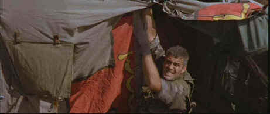

Dreamworks/1998/124m/ANA 2.35
 |
Clooney maintains action integrity©Dreamworks |
Director Mimi Leder
does fine work with the action sequences. The opening which involves the hijacking of the
nuclear warheads is scripted and recorded with potent pen and visual power. Leder’s
camera seems to be in the right place and the cutting maximizes the situation. That’s
really the best of The Peacemaker. Coming out the gate with such force adds extra
pressure on the filmmakers to deliver the goods. Once Kidman is on the scene, you know it
ain’t gonna happen. The Peacemaker pairs Clooney and Kidman as an unlikely
team. In one preposterous sequence, the not too dynamic duo zip off to Eastern Europe to
find out the whereabouts of the contraband carrying truck. This results in a well-filmed
blistering car chase with Clooney at the wheel and Kidman at the squeal. Several more
action segments fill out the film until the rather ridiculous Manhattan manhunt climaxes
in a "come on already" diffusing of a portable nuclear device.
Dreamworks has executed a superb transfer in their debut DVD The
Peacemaker. Mastered with consummate restraint, there is absolutely no edge
enhancement in evidence. The result is a marvelously clean picture, free from added noise,
and no image ringing to disturb picture perfection. Perfection is not an easy theater
companion. Virtually every DVD or laser disc I have watched applies some edge enhancement.
When it’s subtle, the result is usually very effective, but more often than not,
enhancement degrades the image causing ringing and adding noise. Viewers are used to
watching video with some level of image enhancement. It may take a few minutes to get used
to a picture without artificial sharpening, but video connoisseurs will appreciate the
perfection of The Peacemaker. The Dolby Digital 5:1 surround sound is not the
typically aggressive action film mix. Information is there on a need to happen basis only.
The sound consistently supports the image and the balance of music, effect and dialogue
tracks is exemplary.A nice added attraction, there is a short special secton including an
interesting breakdown of two of the action sequences. Stunts are broken down in stages and
compared to the finished sequence. Quite edifying.